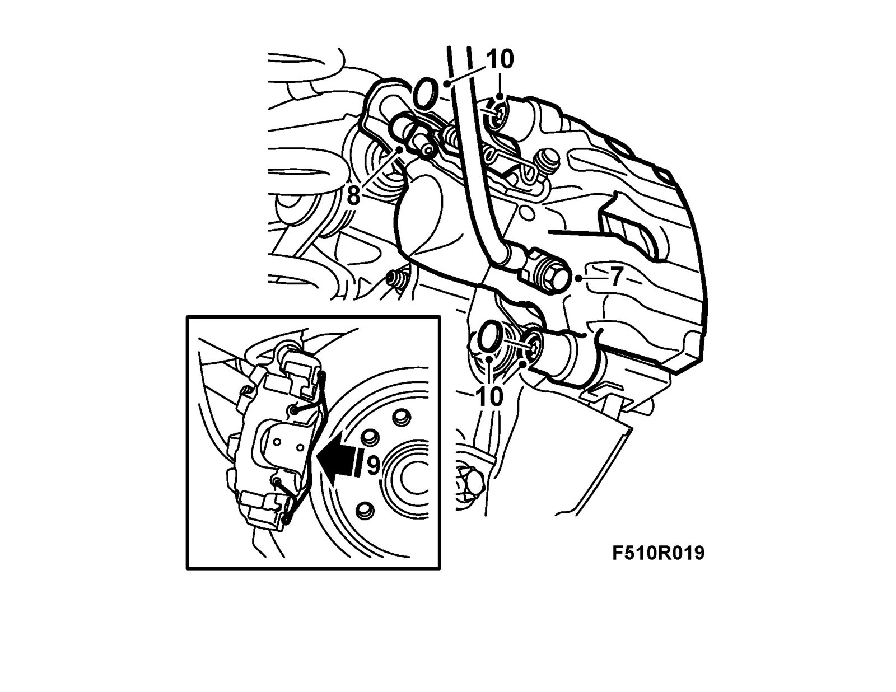
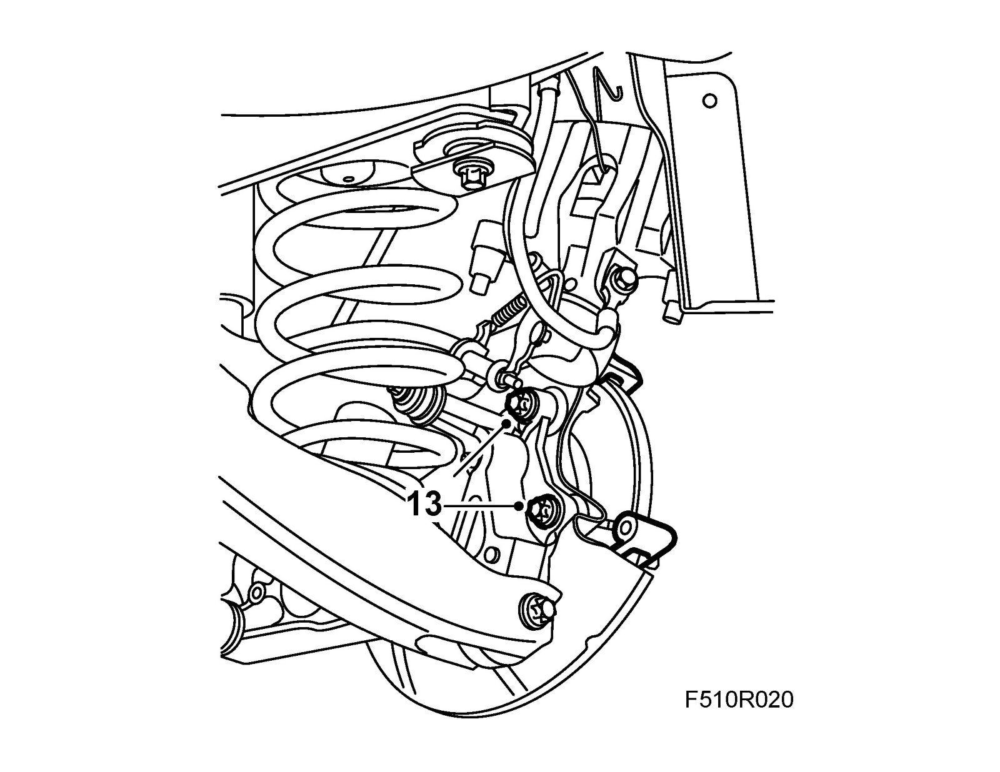
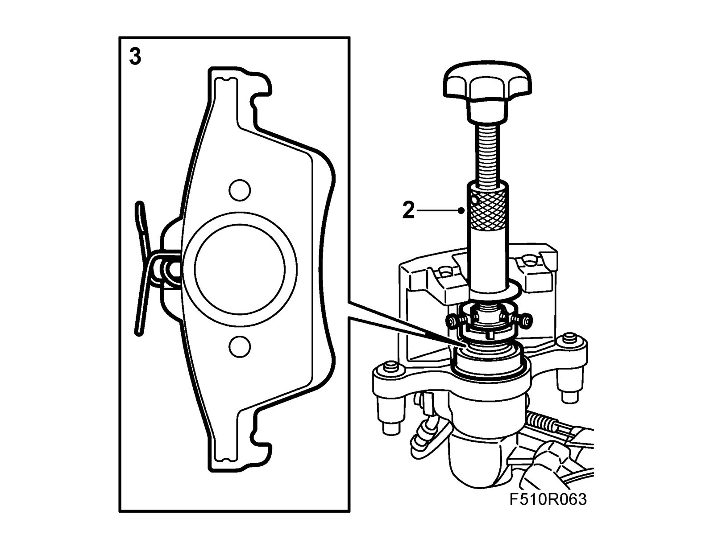

Brake Caliper, Rear
Brake caliper, rearTo remove
1. Lift the rear of the car in order to remove the rear wheel at a later time.
2. Remove fuse 6 from instrument panel electrical centre 22.
3. Depress the brake pedal slightly using a brake pedal clamp.
4. Loosen the Handbrake adjustment so that the cables can be unhooked from the brake caliper. See Adjusting the Handbrake cable.
5. Raise the car.
6. Remove the wheel.
7. Remove the brake hose from the hydraulic body.
8. Remove the Handbrake cable from the hydraulic body.

9. Remove the carrier from the brake caliper.
10. Remove the protective covers and remove the hydraulic body.
11. Remove the outer brake pad.
12. Remove the inner brake pad.
13. Remove the carrier from the steering swivel member.

To fit
1. Clean the contact surfaces between the steering swivel member and the brake caliper carrier.
Fit the brake caliper carrier to the steering swivel member. Apply 74 96 268 Thread locking adhesive to the bolts.
Tightening torque 130Nm +45° (96 lbf ft +45°)
2. Screw in the brake piston if necessary with 89 96 969 Resetting tool and 89 96 977 Adapter.

3. Fit the brake pads.
4. Fit the hydraulic body.
Tightening torque 28 Nm (21 lbf ft)
Fit the protective covers.
5. Fit the retaining spring to the brake caliper.
6. Fit the brake hose with new seals on the hydraulic body.
Tightening torque: 40 Nm (30 lbf ft)
7. Remove the brake pedal clamp and refit fuse 6 in the instrument panel electrical centre 22.
8. Bleed the brake system.
9. Adjust the Handbrake.
10. Fit the wheel.
11. Lower the car.
12. Depress the brake pedal repeatedly in order to press out the brake piston and the Handbrake self adjustment.
13. Check the operation of the foot brake and Handbrake.